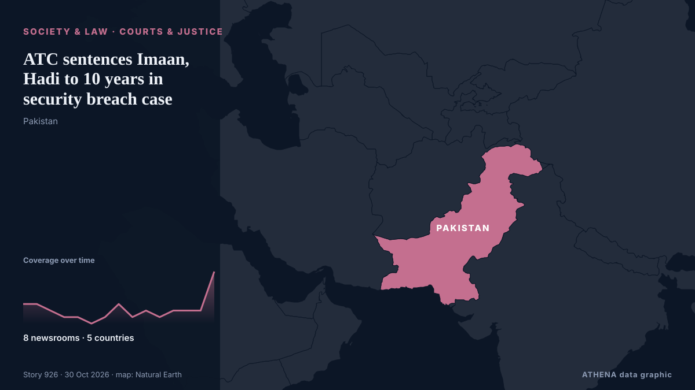

ATC sentences Imaan, Hadi to 10 years in security breach case

ISLAMABAD: An anti-terrorism court on Thursday sentenced human rights lawyer Imaan Zainab Mazari-Hazir and her husband, Hadi Ali Chattha, to 10 years in prison each in the security breach case. από Dawn
Αναφέρθηκε ανεξάρτητα από 8 μέσα σε 5 χώρες από τις 15 Οκτ, πρώτο από το Express Tribune· η κάλυψη εξασθενεί. Το ATHENA εκτιμά τον κίνδυνο χαμηλό (1.5/10), κυρίως λόγω της σοβαρότητας της βλάβης που περιγράφεται και της ποιότητας της τεκμηρίωσης. Η βεβαιότητα είναι 84% (υψηλή), καθώς το επιβεβαιώνουν 8 ανεξάρτητα μέσα με μέση αξιοπιστία πηγών 77%. Ποιοι το ανέφεραν: 27 μέσα στη χώρα Πακιστάν · Pakistan, 1 μέσα στη χώρα Ηνωμένα Αραβικά Εμιράτα · United Arab Emirates, 1 μέσα στη χώρα Νότια Αφρική · South Africa. Η κάλυψη διήρκεσε από 15 Οκτ έως 30 Οκτ, 358 ώρες.
Γιατί έχει σημασία: Οι νομικές αλλαγές και οι αλλαγές πολιτικής μεταβάλλουν δικαιώματα, υποχρεώσεις και δημόσιες υπηρεσίες για όσους αφορούν.
Τι άλλαξε: 8 νέες αναφορές από 6 μέσα στο 24ωρο έως 30 Οκτ.
Οι τίτλοι των ειδήσεων παρουσιάζονται στα αγγλικά, όπως δημοσιεύτηκαν.
Με μια ματιά
Επιλέγεται, βαθμολογείται και γράφεται από τη δημοσιευμένη μεθοδολογία του ATHENA. Κανένας συντάκτης δεν παρεμβαίνει σε μεμονωμένα γεγονότα. Πώς παράγεται ›
| 15 Oct 04:54 UTC | 3 |
|---|---|
| 16 Oct 04:54 UTC | 3 |
| 17 Oct 04:54 UTC | 2 |
| 18 Oct 04:54 UTC | 1 |
| 19 Oct 04:54 UTC | 1 |
| 20 Oct 04:54 UTC | 0 |
| 21 Oct 04:54 UTC | 1 |
| 22 Oct 04:54 UTC | 3 |
| 23 Oct 04:54 UTC | 1 |
| 24 Oct 04:54 UTC | 2 |
| 25 Oct 04:54 UTC | 1 |
| 26 Oct 04:54 UTC | 2 |
| 27 Oct 04:54 UTC | 2 |
| 28 Oct 04:54 UTC | 2 |
| 29 Oct 04:54 UTC | 8 |
| 17 Oct 11:37 UTC | 3.6 |
|---|---|
| 17 Oct 13:56 UTC | 1.2 |
| 22 Oct 07:13 UTC | 3.5 |
| 26 Oct 12:36 UTC | 1.2 |
| 28 Oct 12:03 UTC | 3.6 |
| 29 Oct 07:47 UTC | 1.2 |
| 29 Oct 08:32 UTC | 3.6 |
| 29 Oct 10:20 UTC | 1.4 |
| 30 Oct 02:27 UTC | 1.5 |
Γιατί αυτοί οι αριθμοί
Σημασία
Κίνδυνος
Βεβαιότητα
Η κάλυψη — ποιος το ανέφερε και πότε
ο τίτλος όπως δημοσιεύτηκε · ανοίγει το πρωτότυπο- Express Tribune · Πακιστάν · PakistanLaw ministry notifies jail trial for Imaan, Hadi
- Dawn · Πακιστάν · PakistanImaan, Hadi to face jail trial in security breach case
- APP (Associated Press of Pakistan) · Πακιστάν · PakistanATC seeks police explanation for non-production of Iman Mazari, Hadi Chattha; jail trial notified
- Dawn · Πακιστάν · PakistanImaan, Hadi walk out of proceedings after objecting to jail trial in security breach case
- APP (Associated Press of Pakistan) · Πακιστάν · PakistanATC records statement of another witness in Imaan Mazari, Hadi Chattha case
- Express Tribune · Πακιστάν · PakistanATC summons Islamabad IGP in Imaan, Hadi bail case on November 3
- Dawn · Πακιστάν · PakistanIslamabad ATC summons Islamabad police chief in security breach case against Imaan and Hadi
- Express Tribune · Πακιστάν · PakistanImaan, Hadi seek suspension of ATC trial over alleged procedural violations during indictment
- Dawn · Πακιστάν · PakistanIHC takes up Imaan, Hadi’s appeals against framing of charges in security breach case
- Dawn · Πακιστάν · PakistanATC appoints state counsel for Imaan, Hadi in security breach case
- Express Tribune · Πακιστάν · PakistanATC replaces state counsel after Imaan, Hadi object to appointment
- Dawn · Πακιστάν · PakistanATC replaces state counsel in security breach case after Imaan, Hadi object to appointment
- Express Tribune · Πακιστάν · PakistanState counsel completes cross-examination in Imaan, Hadi security breach case
- Dawn · Πακιστάν · PakistanState counsel cross-examines prosecution witnesses in security breach case against Imaan, Hadi
- Dawn · Πακιστάν · PakistanATC orders Imaan, Hadi to record their statements in security breach case
- Dawn · Πακιστάν · PakistanATC warns Imaan, husband of verdict sans testimony
- Express Tribune · Πακιστάν · PakistanImaan Mazari, Hadi Chattha move SC seeking suspension of ATC trial
- APP (Associated Press of Pakistan) · Πακιστάν · PakistanImaan Mazari, Hadi Chatha move Supreme Court against IHC order on trial proceedings
- Dawn · Πακιστάν · PakistanImaan, Hadi move SC against IHC order refusing to stay trial in security breach case
- Express Tribune · Πακιστάν · PakistanATC reserves verdict in barrier removal case against Imaan, Hadi
- Dawn · Πακιστάν · PakistanATC reserves verdict in security breach case against Imaan, Hadi
- Dawn · Πακιστάν · PakistanImaan, Hadi allege security breach case 'nothing more than harassment' for their human rights work
- Express Tribune · Πακιστάν · PakistanATC sentences Imaan Mazari, Hadi Ali Chattha to 10 years each in barrier removal case
- Dawn · Πακιστάν · PakistanATC sentences Imaan, Hadi to 10 years in security breach case
- Business Recorder · Πακιστάν · PakistanImaan Mazari, Hadi Chattha sentenced to 10 years in prison
- Dawn · Πακιστάν · Pakistan'Absolutely absurd verdict': Lawyers, journalists react to Imaan, Hadi's sentencing in security breach case
- Gulf News · Ηνωμένα Αραβικά Εμιράτα · United Arab EmiratesPakistan human rights lawyer Imaan Mazari, husband jailed for 10 years each in terrorism case
- IOL · Νότια Αφρική · South AfricaPakistani lawyers jailed under anti-terrorism law over England cricket team security case
- Amnesty International · Ηνωμένο Βασίλειο · United KingdomPakistan: Terrorism conviction of human rights lawyers an indictment of justice system
- Al Jazeera English · Κατάρ · QatarPakistan rights activist Imaan Mazari and husband jailed for 10 years
- Business Recorder · Πακιστάν · PakistanImaan, Chattha sentenced to 10-year term of RI